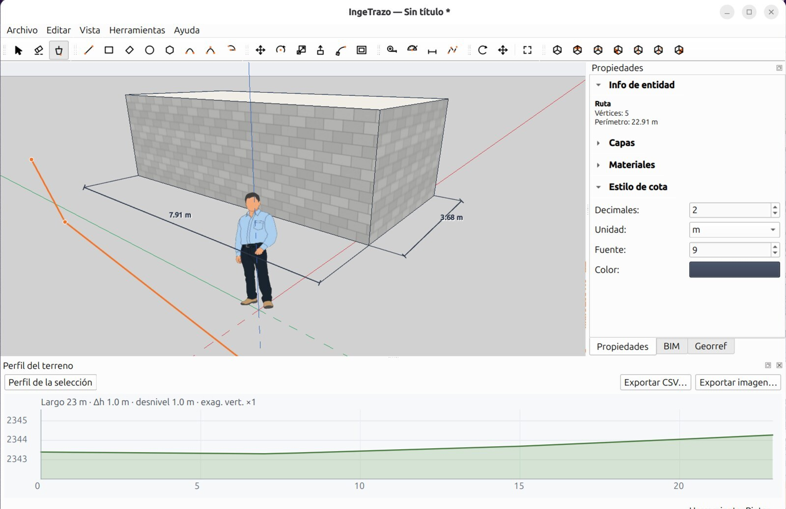
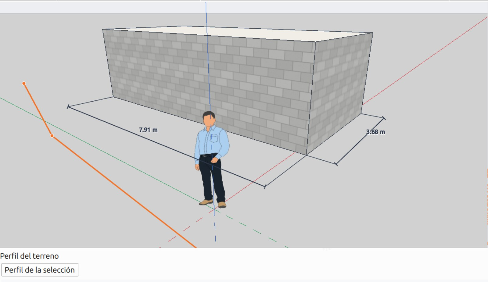
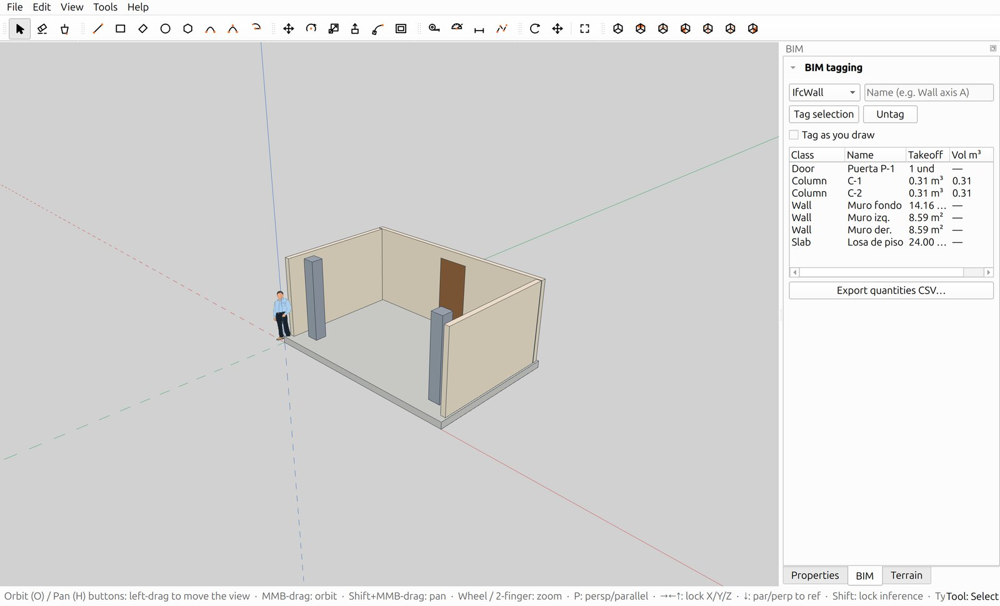
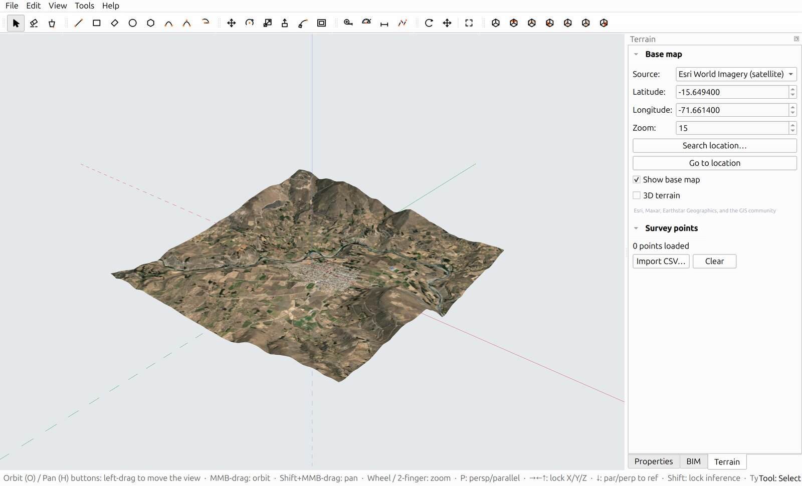
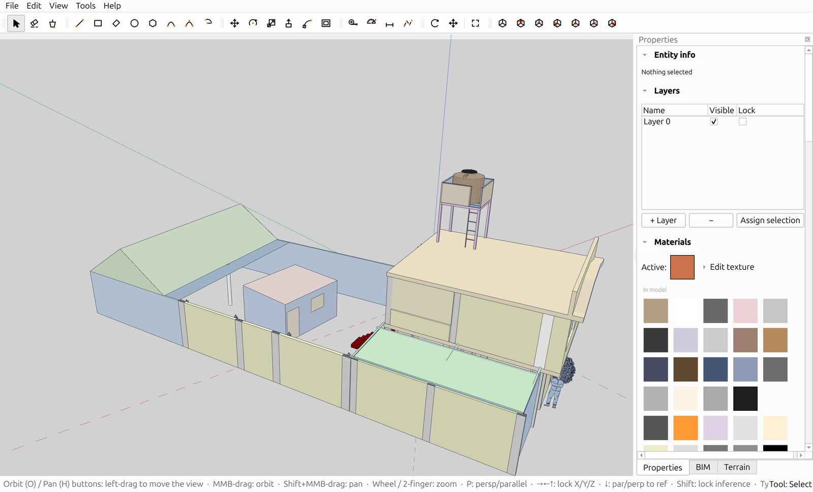
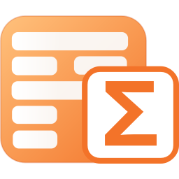

Traza como a mano. Etiqueta BIM. Exporta IFC.
Nativo en Linux — también Windows y macOS. Código abierto.

Dibuja líneas, rectángulos, círculos y arcos; empuja una cara y ya tienes un sólido. Sin capas de complejidad CAD entre tu idea y el modelo.
3.50 y la línea mide 3.50 m
El BIM en IngeTrazo no es una jaula de familias rígidas: modelas libre y etiquetas lo que quieras como muro, losa, columna o puerta.
Sólidos garantizados herméticos: si una operación rompería el volumen, el motor la rechaza en vez de corromper tu metrado.

Ubica tu proyecto en el mundo real: imagen satelital, relieve 3D y datos de campo, directo en el modelador.
El modelador completo funciona offline; solo el mapa usa internet.

Tu biblioteca de años no se queda atrás: exporta desde SketchUp y ábrelo en IngeTrazo con grupos, materiales y texturas.


IngeTrazo es el hermano de IngePresupuestos: etiqueta tu modelo, exporta el IFC e impórtalo allá — las partidas llegan con sus metrados exactos, listas para el análisis de costos.
IngeTrazo es software libre bajo GPL-3.0. Sin cuentas, sin nube obligatoria, sin suscripciones: tus modelos viven en tu PC, en un formato abierto que siempre podrás leer. Hecho en el Perú para el ingeniero y arquitecto de toda Latinoamérica.
Gratis y completo. Versión 0.1.0 — julio 2026.
git clone https://github.com/tuxiasumari/ingetrazo && cd ingetrazo
python3 -m venv venv && venv/bin/pip install PySide6 numpy
venv/bin/python main.py
¿Prefieres doble clic? Los instaladores para Linux y Windows llegan con las próximas versiones — sigue los releases.
Lo que todos preguntan antes de trazar la primera línea.
Sí. IngeTrazo es software libre bajo GPL-3.0: gratis hoy y para siempre, con el código fuente publicado en GitHub. Sin cuentas, sin suscripciones, sin funciones bloqueadas.
El dibujo se siente igual de directo (empujar/tirar, inferencias, medidas exactas por teclado), pero IngeTrazo es libre, corre nativo en Linux, garantiza sólidos herméticos aptos para metrado e impresión 3D, y suma la capa BIM: etiquetas la geometría y obtienes cantidades e IFC.
Sí. Exporta desde SketchUp como COLLADA (.dae) u OBJ e impórtalo en IngeTrazo: llegan los grupos, componentes, materiales y texturas. Para que lleguen las texturas, copia el archivo junto con la carpeta de imágenes que genera SketchUp al exportar.
BIM significa darle semántica al modelo: este sólido ES un muro, esta cara ES una puerta. Con eso IngeTrazo calcula las cantidades de obra (m², m³, unidades) y las exporta en IFC, el formato estándar que entienden los programas de presupuestos — incluido IngePresupuestos.
Sí, todo el modelador funciona offline y tus archivos viven en tu PC. Solo el mapa satelital y el terreno 3D descargan imágenes de internet mientras los usas.
IngeTrazo está en versión 0.1: por ahora se instala desde el código fuente — clonar el repositorio, instalar PySide6 y ejecutar main.py (los 3 comandos están en la sección Descargar). Los instaladores con doble clic llegan con las próximas versiones.
Sí. El motor garantiza sólidos cerrados (herméticos) y exporta STL binario listo para el slicer, además de OBJ con materiales.